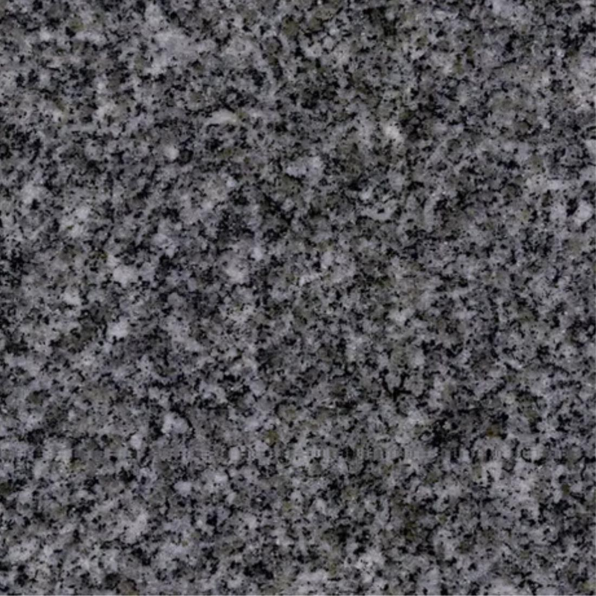
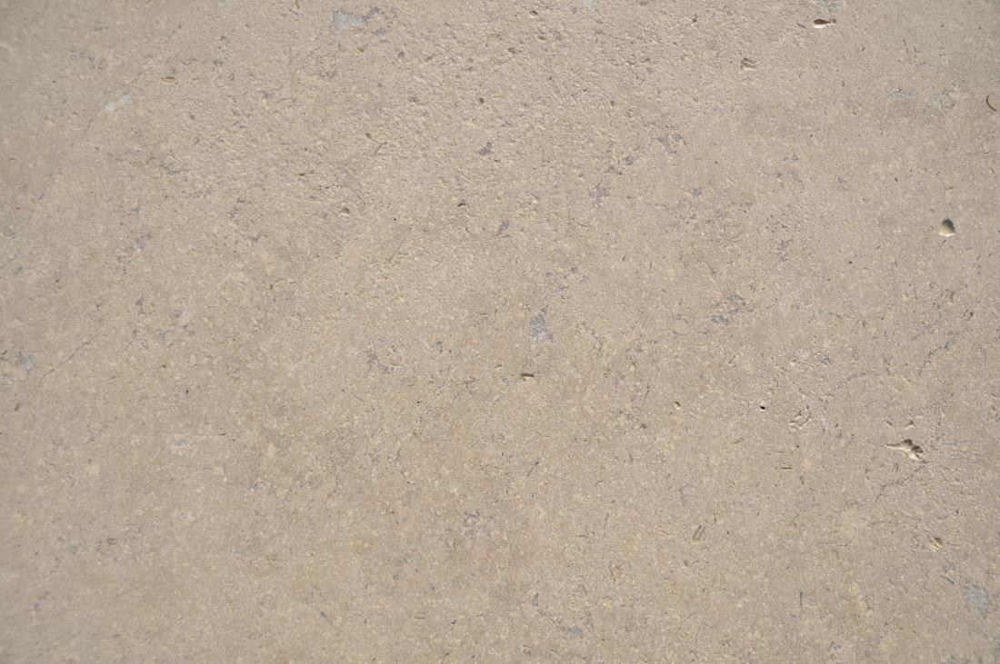
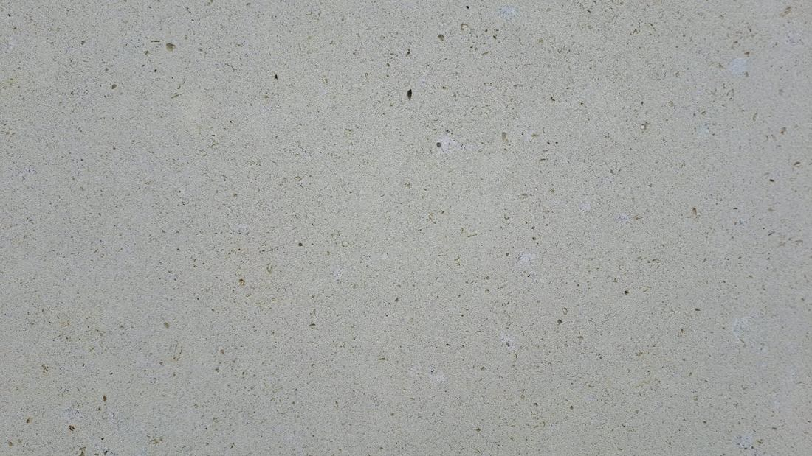
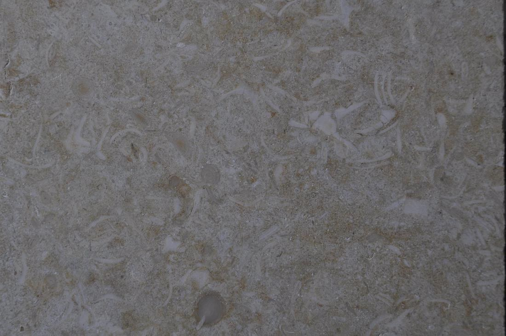
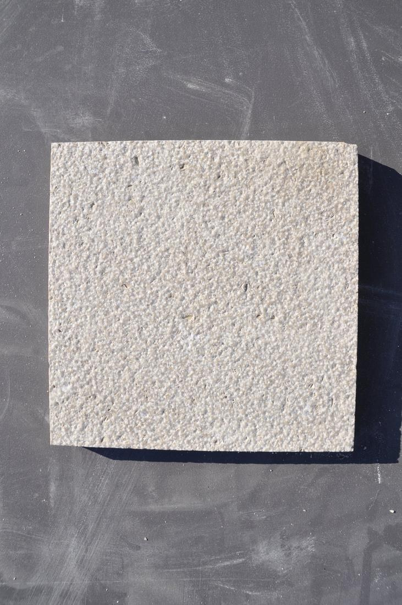
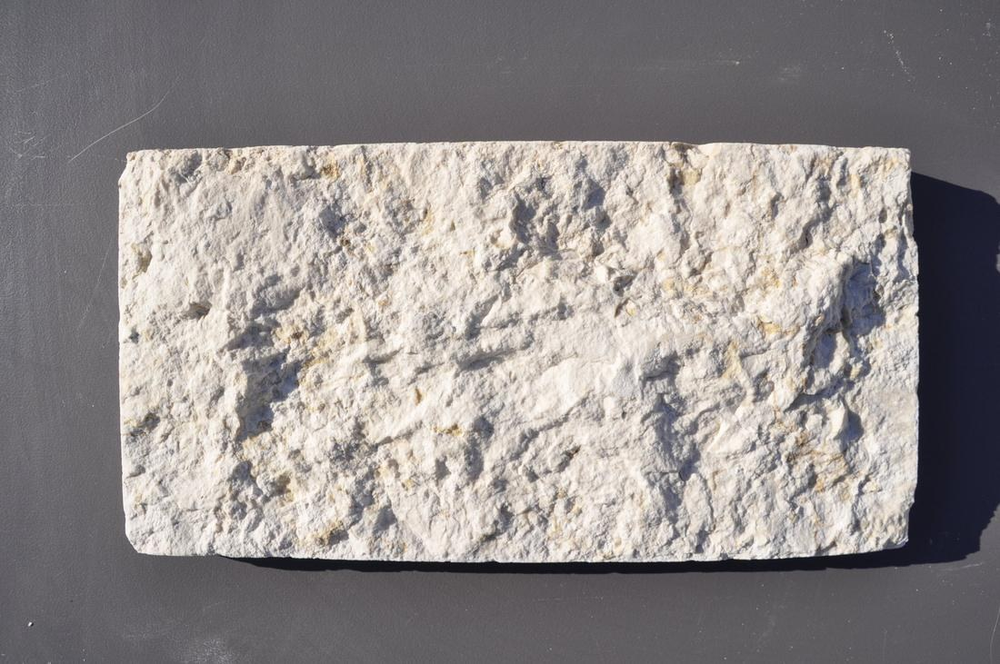
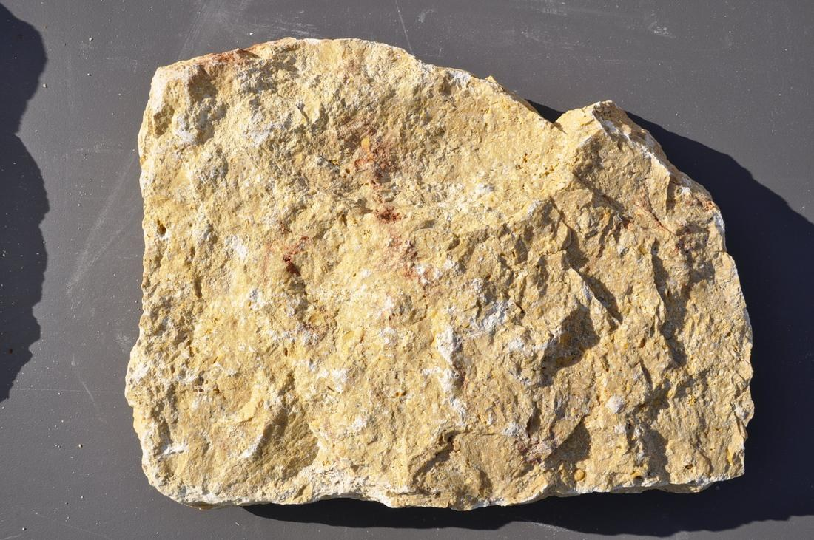
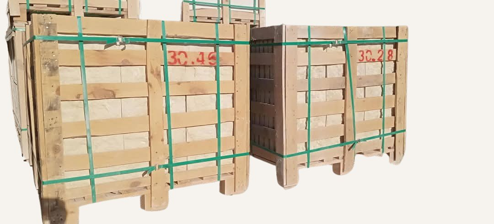

Stone guide
Practical information for specifying stone: the finishes, which stone comes in which finish, and how it is cared for, packed and ordered.
Ten surfaces
The same stone can look and feel very different depending on its surface. Choose the finish for the look, the grip and where the stone will be used.







Best for: Interiors, countertops
Best for: Interior floors and walls
Best for: Floors indoors and out
Best for: Terraces, pools, exteriors
Best for: Paving, stairs, exteriors
Best for: Paving, public areas
Best for: Interiors with a period feel
Best for: Paving, pools, rustic settings
Best for: Walls laid in courses
Best for: Irregular cladding
At a glance
Every stone, the finishes it is supplied in and the forms it comes in. Availability changes through the year: ask for current stock and lead times.
| Stone | Polished | Honed | Brushed | Sandblasted | Bush-hammered | Flamed | Acid-washed | Tumbled | Split face | Rock face | Supplied as |
|---|---|---|---|---|---|---|---|---|---|---|---|
| Marble & Limestone | |||||||||||
| Sinai Pearl | Blocks · slabs · tiles | ||||||||||
| Sunny Menia | Blocks · slabs · tiles | ||||||||||
| Sunny Silvia | Blocks · slabs · tiles | ||||||||||
| Galala | Blocks · slabs · tiles | ||||||||||
| Egyptian range (16) | Slabs · tiles | ||||||||||
| Natural Stone | |||||||||||
| Basalt | Tiles · semi-slabs · strips · cubes | ||||||||||
| Irregular cladding (6) | Pieces, 3 or 5 cm | ||||||||||
| Split face | Strips, 1 to 2 cm | ||||||||||
| Granite | |||||||||||
| New Halayeb | Blocks · slabs · tiles | ||||||||||
| Gandola | Blocks · slabs · tiles | ||||||||||
| Premium Grey | Blocks · slabs · tiles | ||||||||||
| Granite range (15) | Slabs · tiles | ||||||||||
| Landscape | |||||||||||
| Garden steps | Slabs, 3 cm · block steps | ||||||||||
| Flagstone & basalt cubes | Pieces, 3 cm · cubes | ||||||||||
Looked after, packed properly
Natural stone lasts for generations if it is looked after, and arrives intact if it is packed properly. Every order leaves Koropi in reinforced, fumigated wooden crates that meet the ISPM 15 export standard.

General guidance only. Always follow the installer's and the adhesive manufacturer's instructions.